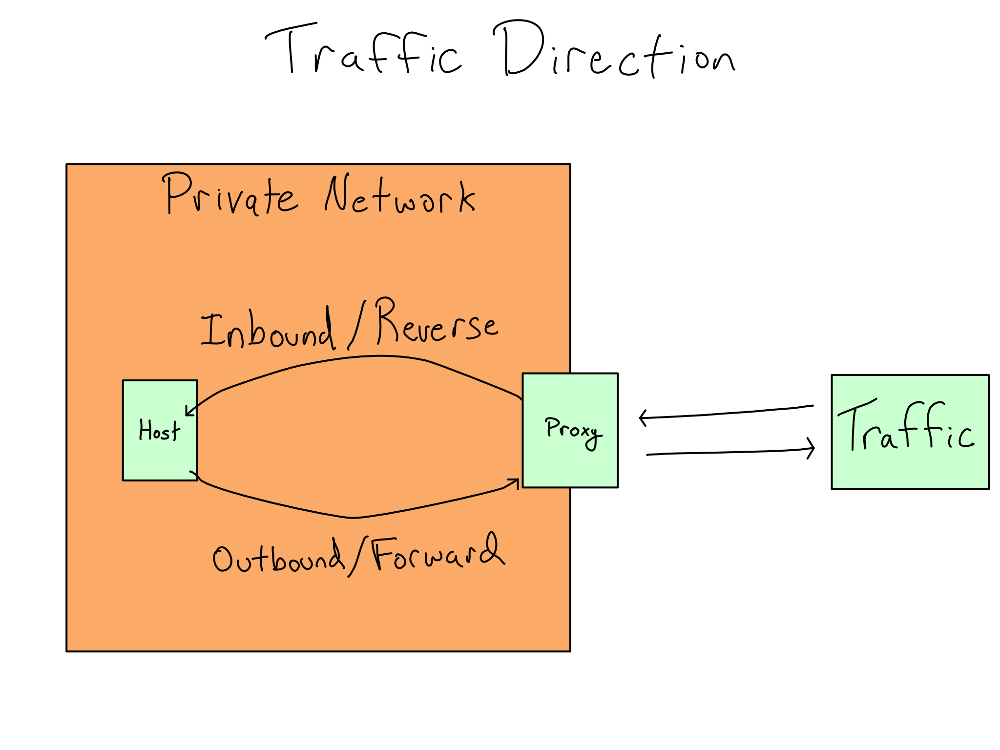

15 Enterprise Networking
Though it may sound hyperbolic, enterprise networks are constantly under siege. The public internet is swirling with people and bots trying to access private environments to exfiltrate data or co-opt free computational resources.
Networking is the outermost layer of security for a private computing environment. It’s like the outer wall of a gated community for all the servers the IT/Admin group maintains.
In this chapter, you’ll learn about how an enterprise IT/Admin thinks about configuring networking, as well as some of the issues that come up when trying to do data science inside a locked-down enterprise environment.
15.1 Enterprise networks are private
An enterprise network houses dozens or hundreds of servers, each with its own connection requirements. Some are accessible to the outside, while others are only accessible to other servers inside the network.
For that reason, the servers controlled by an enterprise live inside one or more private networks. The good news is that private networks look like public ones, which you learned about in Chapter 12. Every host in a private network has an IP Address. It’s just a private IP address handed out by the router that governs the network and is valid only inside the private network. And, like you can get a domain for a human-friendly way to address a server on a public network, many private networks use private hostnames to have human-friendly ways to talk about servers.
In AWS, every server lives inside a private network called a virtual private cloud (VPC). When we set up our data science workbench throughout Section 2, we ignored the VPC and assigned the instance a public IP address – which explains why this is the first time you’ve heard about it.
In an enterprise context, this kind of configuration would be a no-go.
With so many services running inside a network, connection requirements can get byzantine. For example, you probably want to set up a data science workbench and a data science hosting environment.
The servers in the data science environment should:
Be reachable from users’ laptops.
Reach one or more databases that are only accessible from inside the private network and may also connect to data sources.
Access a package repository.
And, to comply with the principle of least privilege, you don’t want any of these servers to be more available than needed. Providing precisely the right level of networking access isn’t a trivial undertaking.
Those are just the servers for actually doing work. Enterprise networks also include various devices that control the network traffic itself. When you’re working in a data science environment and run into trouble, you should start by asking whether the issue could be with network traffic struggling to get into, out of, or across the private network.
15.2 The shape of an enterprise network
When you access something important inside a private network, the IP Address is rarely the server doing the work. Instead, it’s usually the address of a proxy server or proxy, an entire server that exists just to run proxy software that routes traffic around the network.
Routing all traffic through the proxy ensures that the work servers only get traffic from other servers that the organization controls, decreasing the number of attack vectors to the work servers. Proxy servers may also do other tasks like terminate SSL or authentication.
You may have to log in to a VPN (Virtual Private Network) for work or school. Where a VPC is a private network inside a cloud environment, a VPN is a private network for remote access to a shared network. You generally don’t directly log in to an enterprise VPC (or on-prem private network), but you might log in to an adjacent VPN ensuring that anyone who accesses the network is coming from an authenticated machine.
Enterprise networks are almost always subdivided into subnets, which are logically separate partitions of the private network.1 In most cases, the private network is divided between the public subnet or demilitarized zone (DMZ) where the proxies live and the private subnet where all the important servers live.2
Aside from the security benefits, putting the important servers in the private subnet is also more convenient because the IT/Admins can use private hostnames and IP Addresses without worrying about uniqueness on the public internet. For example, they could use the hostname \(\text{google.com}\) for a server because it only needs to be valid inside the private network. But, that’s confusing and I wouldn’t recommend it.
15.3 Networking pain follows proxies
The most straightforward networking issue is that a connection doesn’t exist where one is needed. This is usually clear when using tools like ping and curl and can be solved by working with your IT/Admin team.
Difficulties tend to be more subtle when proxies are involved and enterprise networks feature proxies all over the place. Much like the watertight bulkheads between every room on a naval ship, proxies show up between any two parts of the network that you might want to seal off at some point. And where a proxy exists, it can cause you trouble.
In fact, two different proxies might mess with any given leg of the journey. There could be a proxy that handles the traffic as it leaves one server (outbound) as well as one that intercepts traffic arriving at the destination (inbound).
Inbound and outbound are terms I’ve chosen.
Traditionally, proxies are classified as reverse or forward as if you’re a host inside the private network, with inbound proxies called reverse and outbound ones called forward. I found that nearly impossible to remember and started using inbound and outbound. I find it much easier to remember and IT/Admins always understand what I mean.

The first step in debugging networking issues is to ask whether one or more proxies might be in the middle. You can jumpstart that discussion by clearly describing where the traffic originates, where it’s going, the protocol it’s using, and the port it’s targeting.
People often get tripped up on where the traffic originates and terminates, especially when using their laptop to access a server. When you’re accessing a data science project running on a server, the only inbound traffic to the private network is the connection from your laptop to the server. Code that runs on the server can only generate outbound traffic. So nearly all the traffic you care about is outbound, including package installation, making API calls in your code with {requests} or {httr}, connecting to a Git repo, or connecting to data sources.
15.3.1 Issues with inbound proxies
Almost all private networks feature inbound proxies that handle traffic coming in from the internet. This can cause problems in a data science environment if everything isn’t configured correctly.
One of the first questions IT/Admins ask is what ports must be open in the proxy.
Database traffic often runs using non-HTTP traffic to special ports. For example, Postgres runs on port \(5432\). However, your database traffic should probably all occur inside the private network so this won’t be an issue.
Almost other traffic, including package downloads, is standard HTTP(S) traffic, so it can happily run over \(80\) or \(443\).
Inbound redirection issues can be hairy to debug. Very often, these issues arise because the application you’re using (say, JupyterHub or RStudio) expects to be able to redirect you back to itself. If the proxy isn’t configured correctly, the service will start and run just fine, but certain user interactions won’t work the way you expect.3 This will likely surface upon starting new sessions or launching something (like an app or doc) inside the platform. Your application should have an admin guide with directions on hosting it behind a proxy. Confirm with your admin that those steps have been followed.
Proxies also often impose file size limits and/or session duration timeouts. If weird things happen during file uploads or downloads, or sessions end unexpectedly, start by checking on the inbound proxy settings.
Some data science app frameworks, including Shiny and Streamlit, use a technology called websockets to maintain the connection between the user and the app session. Most modern proxies support websockets, but since some older on-prem proxies don’t, you may have to figure out a workaround if you can’t get websockets enabled on your proxy.
15.4 Air gapping with outbound proxies
Unlike inbound proxies, which appear in virtually every enterprise private network, outbound proxies are only used when there is a need to restrict traffic from leaving the private network. This can be necessary to avoid data exfiltration or to ensure that users only acquire resources that have been explicitly allowed into the environment.
Environments with limited outbound access are called offline or air gapped. The term air gap originates from before ubiquitous wireless connections and referred to a literal gap of air where a network cable might otherwise be. These days, truly air gapped networks are very rare and air gapping is usually accomplished by routing outbound traffic to an outbound proxy that disallows (nearly) all connections.
The biggest issue in an air gapped environment is that you can’t access anything outside the network, including public repositories of Python and R packages. You will be to make sure your IT/Admin understands that you cannot do your job without a way to work with packages. There’s more on managing packages in an air gapped environment in Chapter 18.
Your IT/Admin must also determine how to manage operating system updates, system library installations, and licensing of any paid software inside the environment.4 They likely already have solutions that include a data transfer system, internal repositories, and/or temporarily opening the firewall.
15.5 Comprehension Questions
- What is the advantage of adopting a more complex networking setup over a server deployed directly on the internet? Are there advantages other than security?
- Draw a mental map with the following entities: inbound traffic, outbound traffic, proxy, private subnet, public subnet, VPC
- Let’s say you’ve got a private VPC that hosts an instance of RStudio Server, JupyterHub, and Shiny Server with an app deployed. Here are a few examples of traffic. Are they outbound, inbound, or within the network?
Someone connecting to and starting a session on RStudio Server.
Someone SFTP-ing an app and packages from RStudio Server to Shiny Server.
Someone installing a package to the Shiny Server.
Someone uploading a file to JupyterHub.
A call in a Shiny app using
httr2orrequeststo a public API that hosts data.Accessing a private corporate database from a Shiny for Python app using
sqlalchemy.
- What are the most likely pain points for running a data science workbench that is fully offline/airgapped?
Subnets are defined as a range of IP addresses by something called a CIDR (Classless Inter-Domain Routing) block.
Each CIDR block is defined by a starting address and a suffix that indicates the size of the range. For example, the \(10.33.0.0/26\) CIDR block is the 64 addresses from \(10.33.0.0\) to \(10.33.0.63\).
Each CIDR number is half the size of the prior block, so the \(10.33.0.0/26\) CIDR can be split into the \(10.33.0.0/27\) block of 32 addresses from \(10.33.0.0\) to \(10.33.0.31\) and the \(10.33.0.32/27\) block for \(10.33.0.32\) through \(10.33.0.63\).
Don’t try to remember this. There are online CIDR block calculators if you ever need to create them.↩︎
The public subnet usually hosts at least two proxies – one to handle regular HTTP(S) traffic and one just to route SSH traffic to hosts in the private network. The SSH proxy is often called a bastion host or jump box.
There are also network infrastructure devices to translate public and private IP addresses back and forth that go alongside the proxies. Private subnets have a device that only allows outbound traffic called a NAT (Network Address Translation) Gateway by AWS. Public subnets have a two-way device called an Internet Gateway by AWS.
It’s also very common to have 4 subnets and duplicate the public/private subnet configuration across two availability zones to be resilient to failures in one availability zone.↩︎
For example, remember those headers we had to add to traffic to RStudio Server in Chapter 12 and Chapters 14 so it knew it was on a subpath and on HTTPS.
This can be particularly gnarly if your proxy also does authentication. If your proxy expects that every request has credentials attached, but your application doesn’t realize it has to go through the proxy, weird behavior can ensue when your application calls itself via HTTP.↩︎
In online neworks, licenses are often applied by reaching out to a license server owned by the software vendor.↩︎